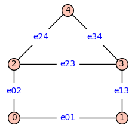
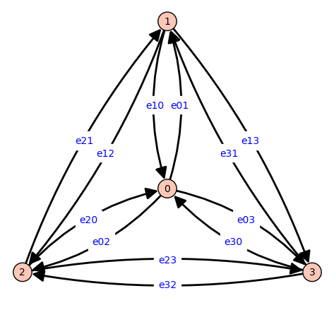
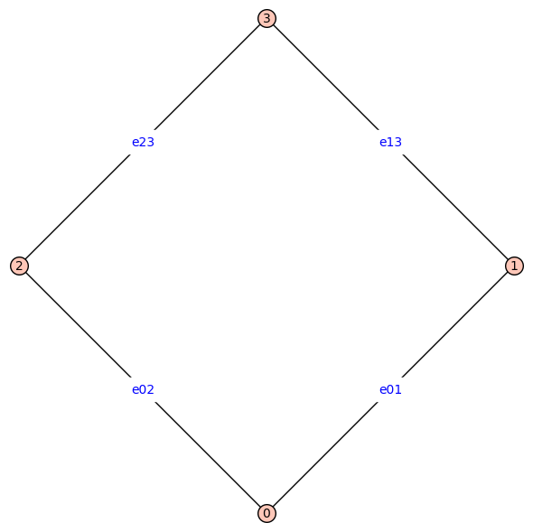

Reduced Graph Powers#
This is a toolbox of functions to help with understanding reduced power graphs and tree polynomials.
%%capture
%run receptor_tools.ipynb
Tree polynomials
G = graphs.HouseGraph()
G = add_edge_monomials(G)
G.show(figsize=3,edge_labels=true)

L=combinatorial_laplacian(G)
print(L)
[ e01 + e02 -e01 -e02 0 0]
[ -e01 e01 + e13 0 -e13 0]
[ -e02 0 e02 + e23 + e24 -e23 -e24]
[ 0 -e13 -e23 e13 + e23 + e34 -e34]
[ 0 0 -e24 -e34 e24 + e34]
T=tree_polynomial(G)
print(T)
e01*e02*e13*e24 + e01*e02*e23*e24 + e01*e13*e23*e24 + e02*e13*e23*e24 + e01*e02*e13*e34 + e01*e02*e23*e34 + e01*e13*e23*e34 + e02*e13*e23*e34 + e01*e02*e24*e34 + e01*e13*e24*e34 + e02*e13*e24*e34
G=graphs.WheelGraph(4)
D = symmetric_directed(G)
D = add_edge_monomials(D)
D.show(figsize=6,edge_labels=true)
print(tree_polynomial(D))

e10*e20*e30 + e12*e20*e30 + e13*e20*e30 + e10*e21*e30 + e13*e21*e30 + e10*e23*e30 + e12*e23*e30 + e13*e23*e30 + e10*e20*e31 + e12*e20*e31 + e10*e21*e31 + e10*e23*e31 + e10*e20*e32 + e12*e20*e32 + e13*e20*e32 + e10*e21*e32
Constructing reduced graph powers with transitions and contexts as edge labels
G = graphs.CycleGraph(4)
G = G.canonical_label()
G = add_edge_monomials(G)
G.show(figsize=8,edge_labels=true)

Gk=reduced_cartesian_power(graphs.CycleGraph(4),2,edge_labels='cannonical')
Gk.show(figsize=8,edge_labels=true)

Gk=reduced_cartesian_power(graphs.PathGraph(4),3,edge_labels='induced',prefix='a')
Gk.show(figsize=20,edge_labels=true,vertex_size=2000)

G=graphs.CycleGraph(3)
Gk=reduced_cartesian_power(G,2,edge_labels='induced',prefix='a',independent=true)
Gk.show(figsize=5,edge_labels=true,vertex_size=0)
print(combinatorial_laplacian(Gk))
print()
Tk=tree_polynomial(Gk); print(Tk)
Tk.factor()

[ a01 + a02 -a01 -a02 0 0 0]
[ -a01 2*a01 + a02 + a12 -a12 -a01 -a02 0]
[ -a02 -a12 a01 + 2*a02 + a12 0 -a01 -a02]
[ 0 -a01 0 a01 + a12 -a12 0]
[ 0 -a02 -a01 -a12 a01 + a02 + 2*a12 -a12]
[ 0 0 -a02 0 -a12 a02 + a12]
2*a01^3*a02^2 + 2*a01^2*a02^3 + 4*a01^3*a02*a12 + 10*a01^2*a02^2*a12 + 4*a01*a02^3*a12 + 2*a01^3*a12^2 + 10*a01^2*a02*a12^2 + 10*a01*a02^2*a12^2 + 2*a02^3*a12^2 + 2*a01^2*a12^3 + 4*a01*a02*a12^3 + 2*a02^2*a12^3
2*(a01*a02 + a01*a12 + a02*a12)^2*(a01 + a02 + a12)
D = symmetric_directed(graphs.CycleGraph(3))
Dk=reduced_cartesian_power(D,2,edge_labels='induced',prefix='a',independent=true)
Dk.show(figsize=6,edge_labels=true)
print(combinatorial_laplacian(Dk,combinatorial_coefficients=true))
Tk=tree_polynomial(Dk,combinatorial_coefficients=true)
Tk.factor()

[ 2*a01 + 2*a02 -2*a01 -2*a02 0 0 0]
[ -a10 a01 + a02 + a10 + a12 -a12 -a01 -a02 0]
[ -a20 -a21 a01 + a02 + a20 + a21 0 -a01 -a02]
[ 0 -2*a10 0 2*a10 + 2*a12 -2*a12 0]
[ 0 -a20 -a10 -a21 a10 + a12 + a20 + a21 -a12]
[ 0 0 -2*a20 0 -2*a21 2*a20 + 2*a21]
4*(a10*a20 + a12*a20 + a10*a21)^2*(a01 + a02 + a10 + a12 + a20 + a21)
Gk=reduced_cartesian_power(graphs.CubeGraph(4),2)
print('There are',Gk.spanning_trees_count(),'spanning trees. Here is one:')
TGk=Gk.random_spanning_tree()
for e in Gk.edges(sort=True): Gk.set_edge_label(e[0], e[1], 0)
for e in TGk: Gk.set_edge_label(e[0], e[1], 1)
Gk.show(vertex_labels=false,vertex_size=0,figsize=6,edge_colors=Gk._color_by_label({0:'black',1:'cyan'}),layout='circular')
There are 1187343891269694642309198417406636743388000595418407837505224529723117873425106862080000000000000000000000000000 spanning trees. Here is one:

D = symmetric_directed(graphs.CycleGraph(3))
Dk=reduced_cartesian_power(D,3,edge_labels='induced',prefix='a',independent=true)
Dk.show(figsize=6,edge_labels=true)
Tk=tree_polynomial(Dk,combinatorial_coefficients=true)
Tk.factor()

36*(2*a01^2 + 4*a01*a02 + 2*a02^2 + 4*a01*a10 + 5*a02*a10 + 2*a10^2 + 5*a01*a12 + 5*a02*a12 + 4*a10*a12 + 2*a12^2 + 5*a01*a20 + 4*a02*a20 + 5*a10*a20 + 5*a12*a20 + 2*a20^2 + 5*a01*a21 + 5*a02*a21 + 5*a10*a21 + 4*a12*a21 + 4*a20*a21 + 2*a21^2)*(a10*a20 + a12*a20 + a10*a21)^3*(a01 + a02 + a10 + a12 + a20 + a21)
G = graphs.CycleGraph(3)
G.add_vertex()
G.add_edge(2,3)
D = symmetric_directed(G)
D.show(edge_labels=true,layout='spring')
Dk=reduced_cartesian_power(D,2,edge_labels='induced',prefix='a',independent=true)
Dk.show(figsize=10,edge_labels=true)
Tk=tree_polynomial(Dk,combinatorial_coefficients=true)
Tk.factor()


8*(a01*a02*a10 + a02^2*a10 + a02*a10^2 + a01^2*a12 + 2*a01*a02*a12 + a02^2*a12 + a01*a10*a12 + 2*a02*a10*a12 + a01*a12^2 + a02*a12^2 + a01^2*a20 + a01*a02*a20 + 2*a01*a10*a20 + 2*a02*a10*a20 + a10^2*a20 + 3*a01*a12*a20 + 2*a02*a12*a20 + 2*a10*a12*a20 + a12^2*a20 + a01*a20^2 + a10*a20^2 + a12*a20^2 + a01^2*a21 + 2*a01*a02*a21 + a02^2*a21 + 2*a01*a10*a21 + 3*a02*a10*a21 + a10^2*a21 + 2*a01*a12*a21 + 2*a02*a12*a21 + a10*a12*a21 + 2*a01*a20*a21 + a02*a20*a21 + 2*a10*a20*a21 + a12*a20*a21 + a01*a21^2 + a02*a21^2 + a10*a21^2 + a01^2*a23 + 2*a01*a02*a23 + a02^2*a23 + 2*a01*a10*a23 + 2*a02*a10*a23 + a10^2*a23 + 2*a01*a12*a23 + 2*a02*a12*a23 + 2*a10*a12*a23 + a12^2*a23 + 2*a01*a20*a23 + a02*a20*a23 + 2*a10*a20*a23 + 2*a12*a20*a23 + 2*a01*a21*a23 + 2*a02*a21*a23 + 2*a10*a21*a23 + a12*a21*a23 + a01*a23^2 + a02*a23^2 + a10*a23^2 + a12*a23^2 + a01^2*a32 + 2*a01*a02*a32 + a02^2*a32 + 2*a01*a10*a32 + 2*a02*a10*a32 + a10^2*a32 + 2*a01*a12*a32 + 2*a02*a12*a32 + 2*a10*a12*a32 + a12^2*a32 + 2*a01*a20*a32 + 2*a02*a20*a32 + 2*a10*a20*a32 + 2*a12*a20*a32 + a20^2*a32 + 2*a01*a21*a32 + 2*a02*a21*a32 + 2*a10*a21*a32 + 2*a12*a21*a32 + 2*a20*a21*a32 + a21^2*a32 + 2*a01*a23*a32 + 2*a02*a23*a32 + 2*a10*a23*a32 + 2*a12*a23*a32 + a20*a23*a32 + a21*a23*a32 + a01*a32^2 + a02*a32^2 + a10*a32^2 + a12*a32^2 + a20*a32^2 + a21*a32^2)*(a10*a20 + a12*a20 + a10*a21)^2*a32^2